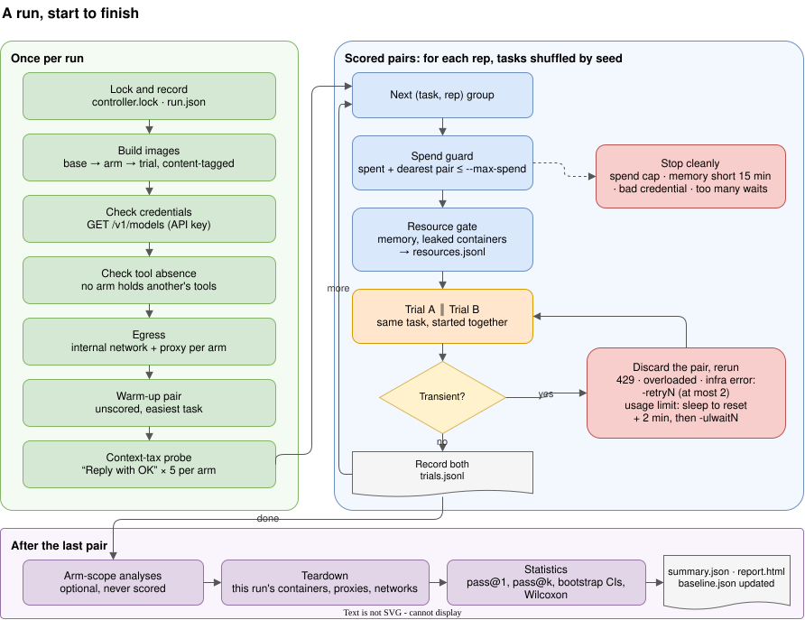
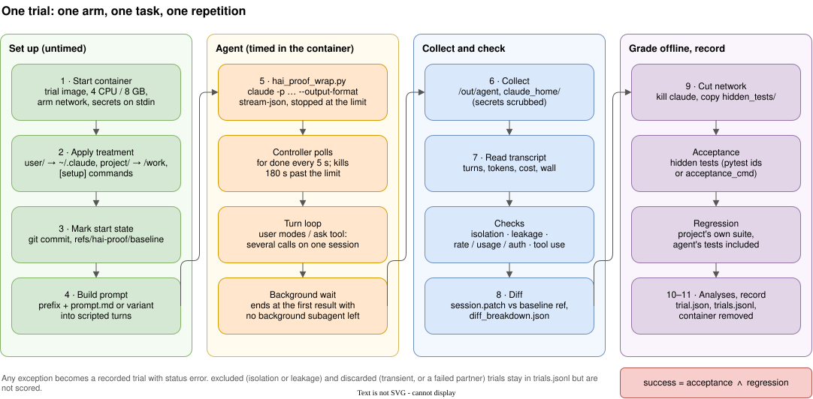
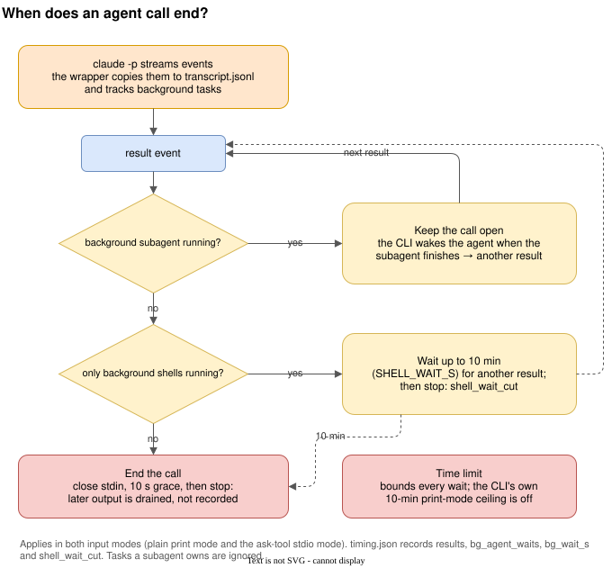

A run, step by step
What happens between hai-proof run and report.html. The walk-through
written from the code, with every flag, is
docs/how-arms-run.md.
Plan first
uv run hai-proof run --treatment X --suite standard --mode full --limit-scale 3 \
--max-spend 500 --cli-version 2.1.309 --dry-runA dry run prints the arms, the tasks, the number of agent, probe and warm-up runs, and the spend ceiling (the sum
of every call's --max-budget-usd cap). --suite picks tasks (default standard),
--mode lightning|quick|full sets 1, 3 or 5 repetitions (quick also drops level-3 tasks), and
--limit-scale multiplies every task's time, turn and budget limits in both arms, for treatments that are
expected to be slower than plain.
The phases of a run

Once per run
- Lock and record.
results/<run-id>/controller.lock, thenrun.json: shape, model, effort, CLI version, seed, limits, each arm's treatment and hash, each task's hash, user and ask-tool modes, and the harness version. - Build images (base, arm, trial), tagged by content hash, so they are reused across runs.
- Check credentials with one free API call; a rejected key stops the run before any spend.
- Check tool absence: no arm's image may contain a tool another arm declares.
- Egress: an internal network and allowlist proxy per arm.
- Warm-up pair: one unscored pair on the easiest task, to absorb image pulls and first cache writes.
- Context-tax probe: five "Reply with the single word OK." sessions per arm, measuring the treatment's fixed cost per session.
Scored pairs
- Each repetition shuffles the task order with the run's seed and runs every task once; repetitions run in blocks, so drift spreads across tasks.
- Within a (task, rep) group the two arms start together on two threads, 50 ms apart, in shuffled order.
- Before each group: the spend guard (spend so far plus the dearest pair so far must stay under
--max-spend) and the resource gate (free memory on controller and host, leaked containers removed, a snapshot toresources.jsonl). Short memory waits up to 15 minutes, then stops the run cleanly. - Transient failures discard the whole pair: a rate limit, overload or infrastructure error in either
trial reruns both as
-retryN(at most 2). A pair with one retried member isn't comparable. - Usage limits (a subscription's 5-hour window): the pair is discarded, the controller sleeps until the
reported reset plus 2 minutes and reruns it as
-ulwaitN. --resume <results-dir>continues a run whose controller died, skipping finished groups.
One trial

Every agent call is the same command line in every arm:
claude -p <prompt> --model <model> [--effort <effort>] --permission-mode bypassPermissions \
--max-turns <n> --max-budget-usd <usd> --exclude-dynamic-system-prompt-sections \
--output-format stream-json --verbosePermissions are bypassed only inside the container, which is the sandbox. The controller writes the call's spec
to the container and starts hai_proof_wrap.py detached; it polls for a done marker every 5
seconds and kills the call if it runs 180 seconds past its limit (graded as a timed-out failure, never retried).
When an agent call ends
Claude Code can start background work: subagents that keep working after the main agent's turn ends, and shells such as dev servers. A call that ended at the first result would grade work a delegate hadn't finished, so the wrapper tracks background tasks from the stream's system events and decides:

Claude Code's own print-mode ceiling (10 minutes after the last turn, then it kills background tasks) is turned
off, and the call's time limit bounds the wait instead. timing.json records how many results a call
produced, how often and how long it waited for subagents, and whether a shell wait was cut.
Collecting and checking
- The wrapper's files and the container's
~/.claude(session and subagent transcripts, file history, todos) are copied out, credentials dropped and secrets scrubbed, and rendered assession.html. - Isolation: the init event must match the arm; a mismatch marks the trial
excluded. - Leakage: a request to the upstream repo or the fix's commit SHA in the transcript marks it
excluded. - Dependency use: whether the agent called the treatment's declared tools.
- Diff:
session.patchagainst the start-state ref, taken before hidden tests arrive, and broken down by category.
Grading, offline
The container is disconnected from its network and any remaining claude process is killed. Then the
hidden tests are copied onto the workspace and the grader runs two steps, each with a 600-second limit and fresh
bytecode:
- Acceptance: the task's hidden tests (pytest node ids, or an
acceptance_cmdfor other runners). - Regression: the project's own suite, with the tests the agent wrote included on purpose.
A trial succeeds when both pass. Optional analyses (--analysis NAME) then run a neutral
--safe-mode session on a copy of the workspace; they never change a result and their cost is reported
separately.
After the last pair
- Arm-scope analyses, if attached; teardown of this run's containers, proxies and networks; a final resource snapshot (anything left is a leak).
summary.jsonandreport.html: pass@1 and pass@k per arm, B vs A with bootstrap intervals and a sign test, cost/token/wall ratios with intervals and Wilcoxon p, per-task tables grouped by cost tier, a forest plot, success disagreements, behaviour (tool calls, subagents, skills), the isolation audit, the change breakdown, the context-tax probe and the user-loop section.- Plain-arm trials with nobody in the loop are folded into each task's
baseline.json.
Only ok trials are scored. discarded, excluded and error trials
stay in trials.jsonl and their directories for inspection. hai-proof report regenerates the
report, hai-proof regrade re-grades saved patches with no API spend, and hai-proof sessions
compares session timelines across trials.
The results directory
results/<run-id>/
run.json trials.jsonl resources.jsonl summary.json report.html
trials/<arm>/<task>/rep<N>[-retryN|-ulwaitN]/
trial.json session.patch diff_breakdown.json grade.json
agent/ transcript.jsonl timing.json stderr.log (turns/NN/ in multi-turn arms)
claude_home/ claude_data.json session.html
user_loop.json (user modes and the ask tool)